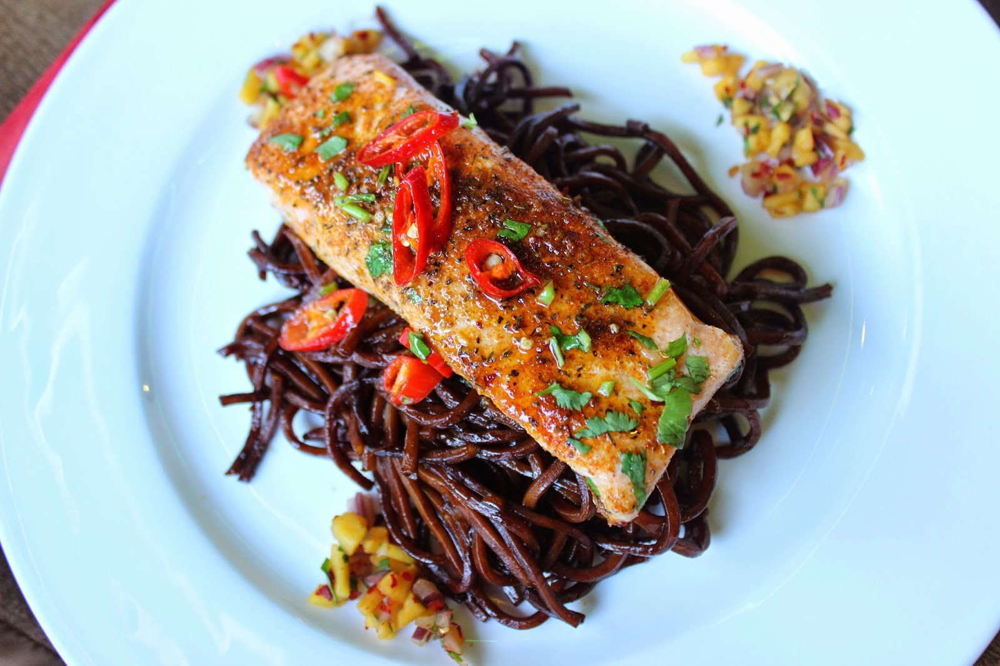

Home
Salmon Noodles

Description
Scrumptious noodles with cooked salmon!
Ingredients
- 1 salmon fillet (about 120g/4½oz)
- 2 tbsp orange juice, fresh or from concentrates
- 1 tbsp soy sauce
- 1 tsp honey
- 1 nest of noodles (about 60g/2¼oz)
- 2 tbsp frozen peas
- 1 spring onion, finely sliced (optional)
- 2 tsp sesame seeds (optional)
Steps
- Put the salmon in a microwaveable bowl. Pour over the orange juice and soy sauce and drizzle over the honey. Microwave for 4 minutes, turning halfway through. Rest in the microwave for a minute before removing, taking care as it might spit.
- Put the noodles in a microwaveable bowl, cover with boiling water and microwave for 5 minutes, or until cooked to your liking. Add the peas and set aside for a few minutes until the peas have defrosted. Drain the water.
- Place the salmon on top of the noodles and pour over the sauce. Sprinkle with spring onions and sesame seeds, if using.